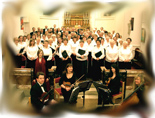

ABOUT
|
CONCERTS
|
VENUES
|
CHOIRS
|
LINKS
|
CONTACT
home
|
choirs
Participating choirs
The Festival involves several choirs from the Winchester and Romsey area who come together for three rehearsals before performing a concert in either Winchester Cathedral or Romsey Abbey
The choirs involved are:
Botley Choral Society
Compton and Shawford Festival Choir
Itchen Valley Choral Society
Overton Choral Society
Sarisbury Choral Society
Twyford Singers
Winchester City Festival Choir

Last updated: 2015-09-03 / Contact the
webmaster